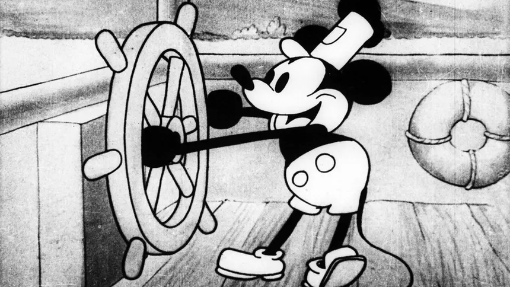
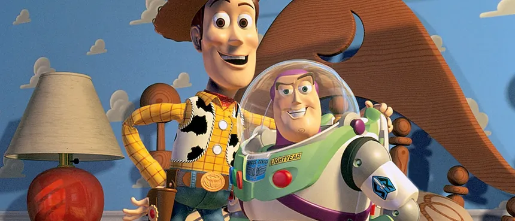
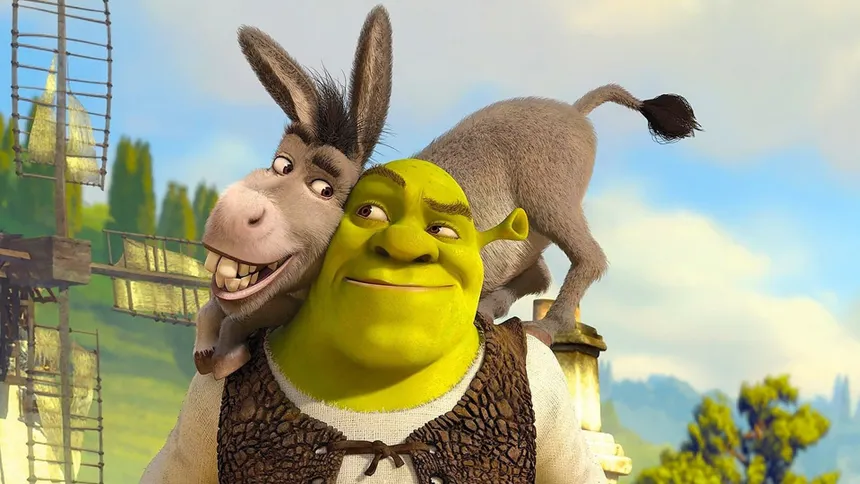

1908: O Início com "Fantasmagorie"
Émile Cohl cria o que é considerado por muitos o primeiro desenho animado da história. Feito com desenhos simples em um quadro-negro, marcou o nascimento da animação como a conhecemos.

Émile Cohl cria o que é considerado por muitos o primeiro desenho animado da história. Feito com desenhos simples em um quadro-negro, marcou o nascimento da animação como a conhecemos.
Embora Gertie tenha sido talvez a primeira personagem animada a ganhar notoriedade, o filme de dinossauro animado de Windsor McCay merece destaque por ser a primeira animação a utilizar enquadramentos-chave, intercalações, marcas de registro e loops de animação.

Walt Disney revoluciona a indústria ao lançar o primeiro curta de animação com som totalmente sincronizado. A estreia de Mickey Mouse mudou para sempre como as animações eram produzidas e consumidas.
A Disney lança "Branca de Neve e os Sete Anões", o primeiro longa-metragem de animação em celuloide e em cores. O sucesso estrondoso prova que a animação podia sustentar narrativas complexas e ser um grande sucesso de bilheteira.

"Os Flintstones" se torna o primeiro programa de animação a ser exibido no horário nobre da televisão. A série, que satiriza a vida da pré-história, estabelece um novo padrão para a animação na TV.
"Who Framed Roger Rabbit" se torna um marco ao misturar personagens de animação com atores de live-action, criando um novo padrão para a animação no cinema.
A Pixar, em parceria com a Disney, lança o primeiro filme de animação inteiramente feito por computação gráfica (CGI). "Toy Story" não só foi um marco tecnológico, mas também estabeleceu um novo padrão de roteiro e narrativa para o gênero.
A DreamWorks Animation vira o mundo dos contos de fadas de cabeça para baixo com "Shrek". O filme utiliza o CGI para criar um universo cômico e repleto de referências à cultura pop, estabelecendo um novo tom para as animações e provando que havia um forte concorrente para o domínio da Pixar no campo do 3D.
A Nickelodeon lança uma série que se tornaria um fenômeno. Com uma profunda inspiração na estética e narrativa dos animes, "Avatar" apresentou ao público ocidental uma história contínua, com desenvolvimento complexo de personagens e temas maduros, elevando o padrão para séries animadas de aventura.
"Avatar" Avatar surpreendeu o público com suas técnicas avançadas de CGI e captura de movimento, dando vida ao exuberante mundo alienígena de Pandora em 2 e 3 dimensões.
"A Sony Pictures Animation quebra todas as convenções do CGI com uma estética revolucionária que simula as páginas de uma história em quadrinhos. O filme misturou técnicas de 2D e 3D, abrindo as portas para um futuro onde a animação 3D não precisa mais seguir um único estilo visual e pode ser infinitamente criativa.